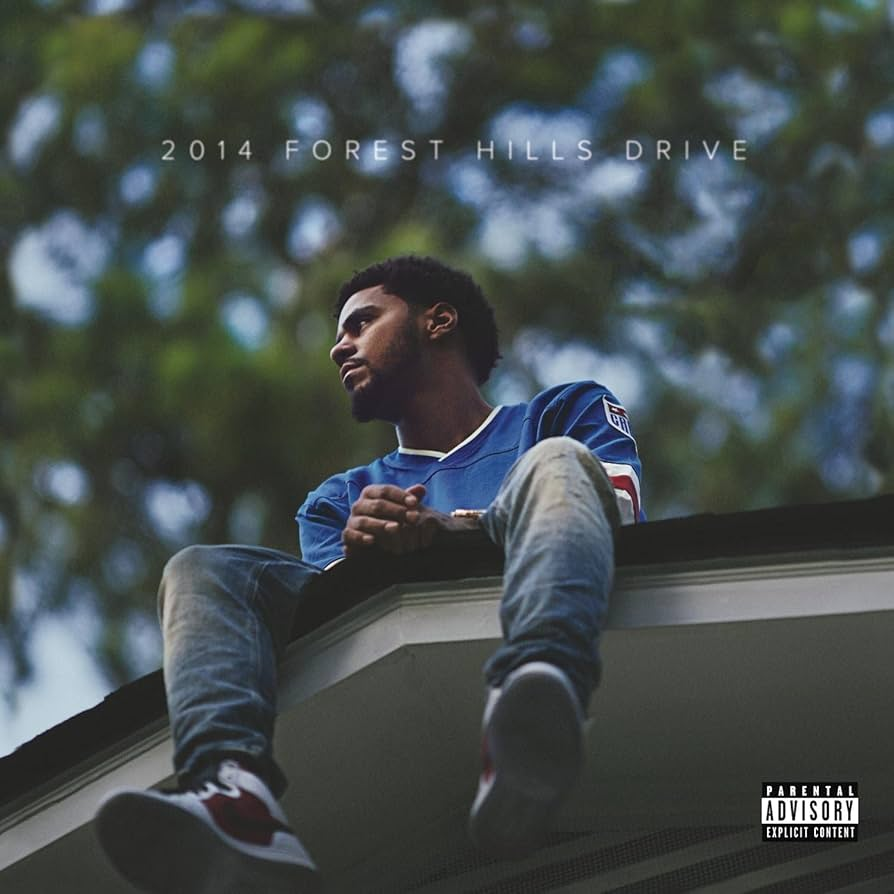

On December 9, 2014, J. Cole released 2014 Forest Hills Drive, his third studio album under Roc Nation and Columbia, a 13-track, 64-minute project produced by J. Cole, Vinylz, Illmind, and others. Named after his childhood home, this no-features introspective opus reflects on fame and roots. As of March 11, 2025, with its 3x platinum status, it’s a modern classic—let’s unpack its journey.
The cover—J. Cole atop his Fayetteville house—sets a nostalgic tone for 2014 Forest Hills Drive’s themes of self-discovery and authenticity. From “Wet Dreamz”’s awkward youth to “Love Yourz”’s life lessons—“No such thing as a life that’s better than yours”—Cole critiques fame’s emptiness. It’s a personal narrative, raw and reflective.
J. Cole, Vinylz, Illmind, and Ron Gilmore craft 2014 Forest Hills Drive’s sound, blending soulful samples with hip-hop grit. “No Role Modelz” loops a jazzy brass, “Apparently” flows with warm pianos, and “Fire Squad” hits with punchy drums. The cohesive production elevates Cole’s storytelling, though some tracks stretch long.
2014 Forest Hills Drive stands alone with no guest artists, a bold move. Cole carries every verse and hook, from “January 28th”’s confident flex to “03’ Adolescence”’s vulnerability. It’s all him, proving his lyrical depth and versatility without leaning on collaborators.
J. Cole’s road to 2014 Forest Hills Drive began with The Come Up (2007), grew with Cole World: The Sideline Story (2011) and “Work Out,” and matured with Born Sinner (2013). After early mixtapes like “Lights Please,” this album refines his introspective style, leading to KOD (2018).
2014 Forest Hills Drive is a 64-minute memoir of J. Cole’s life, blending soulful beats with raw honesty. Its no-features approach and heartfelt lyrics shine, though its length tests patience. As of March 11, 2025, its 3x platinum status and Metacritic score of 67 cement its legacy—a must for hip-hop storytellers.
Originality (18/20): Fresh storytelling, no guests.
Production Quality (17/20): Soulful and tight, slightly long.
Lyrics and Messaging (18/20): Deep and relatable.
Enjoyment Factor (17/20): Engages fans, drags for some.
Consistency (16/20): Strong arc, minor dips.
2014 Forest Hills Drive is Cole’s heartfelt return, a soul-stirring trek through memory and meaning. It’s not flawless, but its truth cuts deep. Spin it loud, let the samples breathe, and feel a dreamer reclaiming his roots—a timeless echo of a man finding peace amid the storm of fame.